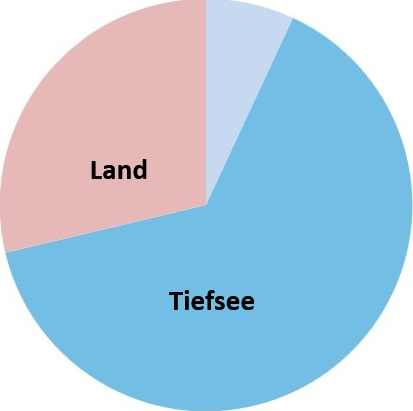

Eine geheimnisvolle Welt
Die Tiefsee ist der dunkelste und tiefste Teil des Meeres.
Sie liegt weit unter der
Wasseroberfläche, wo das Sonnenlicht nicht mehr hinkommt und fast immer dunkel und kalt ist.
Dort leben viele Tiere, die man auf den ersten Blick kaum erkennen kann.
Erklärung:
Tiefsee = der tiefste Bereich des Meeres, weit unten mit wenig Licht.
Interessant: Manche Forscher sagen, dass die Tiefsee schon bei etwa
200 Metern Tiefe beginnt.
Andere sagen sogar bei 800 Metern oder mehr.
Stellt euch vor, die Oberfläche der Erde wird in 100 Teile geteilt:
Statt „Teile“ kann man auch „Prozente“ sagen.
Die Tiefsee ist also größer als alle Landflächen der Erde zusammen.
Ab etwa 200 Metern Tiefe ist kaum noch Licht vorhanden.
Die tiefste Stelle der Erde ist der Marianengraben im Pazifik – fast 11.000 Meter tief!
Vergleich:
Ein Passagierflugzeug fliegt in etwa 10.000 Metern Höhe – in der Tiefsee wäre das genau umgekehrt.
Sonnenlicht dringt nur bis zu einer bestimmten Tiefe.
In der Tiefsee ist es vollkommen dunkel.
Die Temperatur liegt meist nur bei 2–4 °C – fast wie im Kühlschrank.
Je tiefer man geht, desto stärker wird der Druck des Wassers.
Normale Menschen könnten dort nicht überleben.
Der Anglerfisch hat einen leuchtenden Köder am Kopf, um Beute anzulocken. Dieses Licht nennt man Biolumineszenz.
Dieser riesige Tintenfisch kann über 13 Meter lang und bis zu 500 kg schwer werden. Seine Augen sind so groß wie Pizzateller!
Sie ist 10 cm hoch und lebt in 400 m Tiefe.
Dieser Tintenfisch lebt in 600 bis 1000 Meter Tiefe.
Dieser Hai wird ca. 2 Meter lang und schwimmt bis zu 1600 Meter tief. So einen kann man im Naturhistorischen Museum in Wien sehen.
Es gibt noch sehr viele andere Tiere in der Tiefsee.
Diese Tiere sehen ganz anders aus als die Fische, die wir kennen – manche sind transparent, andere haben riesige Augen oder seltsame Formen.